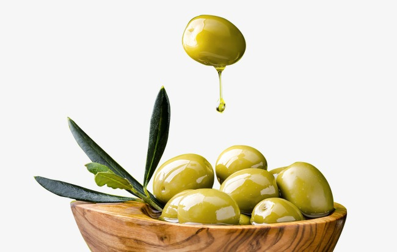

Home Pagina
Informatie
Over ons
Missie
Visie
Wat wij doen
Bel ons!
Welkom bij Oliver Olijf site
Deze site kan dingen doen zoals :
Responsive
Er zit een submenu in.
Verborgen menutje
Mooie animaties.
Mobile gebruikers kunnen het gemakkelijk gebruiken.
Heel cool zijn in alles.
